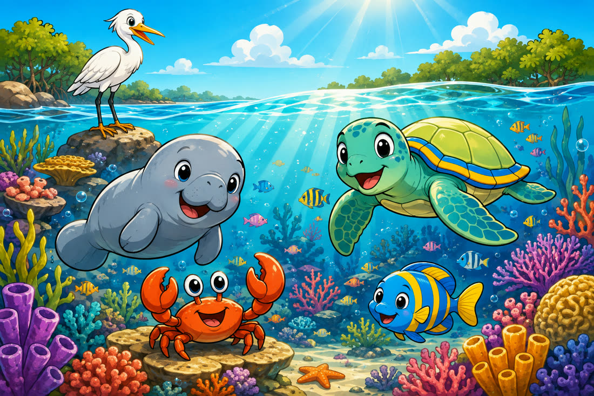

1
El hogar de los animales

El Mar Caribe tiene playas, manglares, arrecifes de coral y pastos marinos: un gran ecosistema lleno de vida. Allí viven felices Tita la tortuga, Coco el cangrejo, Luna el pez, un manatí curioso y una garza elegante. Este es su hogar, y también puede ser el nuestro si aprendemos a cuidarlo.